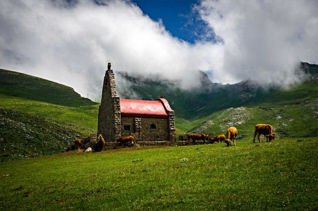
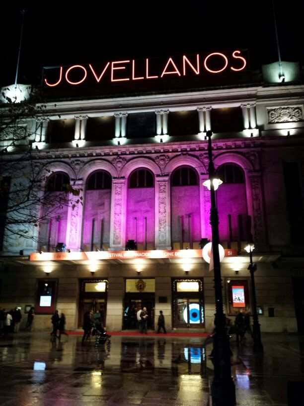
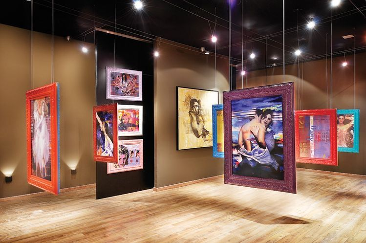

Happiness&Co Asturias nace con la idea de reunir en un solo lugar planes, eventos y experiencias que merecen ser descubiertos. Nos interesa lo cultural, lo gastronómico, lo creativo y todo aquello que ayude a vivir Asturias de una forma más cercana, más humana y más auténtica.
No somos solo una agenda: queremos ser una ventana a propuestas con personalidad, a iniciativas locales y a lugares que generan recuerdos.

Apostamos por una forma de comunicar próxima, clara y honesta, poniendo siempre a las personas en el centro.
Buscamos propuestas con identidad propia, experiencias reales y lugares que transmiten la esencia de Asturias.
Queremos despertar ganas de salir, descubrir, compartir y disfrutar del territorio desde una mirada más viva.
Cultura, paisaje, gastronomía y experiencias forman parte de una región con gran riqueza visual y una agenda de ocio y eventos muy variada.



Queremos ayudarte a descubrir actividades, espacios y propuestas que quizás no aparecen siempre en los circuitos más visibles, pero que aportan valor, identidad y emoción.
Happiness&Co Asturias es una invitación a mirar alrededor con más atención y a disfrutar de una tierra donde siempre hay algo interesante que hacer, probar o conocer.
Si quieres proponernos un evento, una experiencia o una colaboración, estaremos encantados de escucharte.
Contacta con nosotros